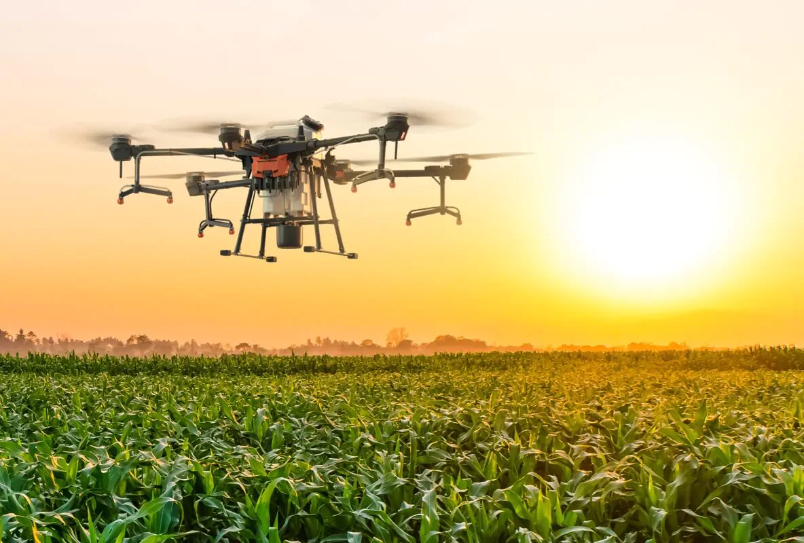

Os drones estão revolucionando a agronomia ao oferecerem novas perspectivas e ferramentas para os profissionais do setor agrícola. Equipados com câmeras avançadas e sensores especializados, esses dispositivos vêm sendo utilizados de maneira inovadora para monitorar e melhorar a produção agrícola. Um dos principais benefícios dos drones na agronomia é a capacidade de coletar dados precisos e em tempo real sobre as plantações. As câmeras de alta resolução permitem aos agrônomos identificar problemas como pragas, doenças e deficiências nutricionais de forma rápida e eficiente. Além disso, os sensores multiespectrais podem detectar variações na saúde das plantas que são invisíveis a olho nu, permitindo intervenções mais direcionadas e precisas.
